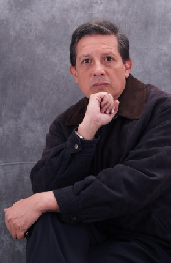

"El camino" es gentileza de Lady Tesy Design.
"Loco, soñador, audaz,
vertiginoso torrente de energía..."
Hablamos de Héctor Cediel Guzmán...
"Añoro la tibieza romántica, que enciende los leños de la pasión, para calentarme como a una copa de brandy. Hablo con la soledad como de costumbre; interrogo a la voluntad mórbida de mis pensamientos. Es curioso que te extrañe y no me hagas falta, que me haya hastiado la angustia que me generas, como si me sobrara el tiempo para quemarlo en la chimenea. Ahora los versos se han transformado en mi dulce compañía; velan para exorcizar a los fantasmas de la depresión; contemplo como las hormigas acondicionadas, persiguen con un aparente sin sentido, a las sombras de sus oscuros destinos. Aguardar a que escampe bajo una cubierta,
genera la misma angustia de una cita incumplida; no se si el destino
me acecha como a una fiera o si desea emboscarme con una sorpresa, que
transforme en una noche de navidad, a mi profunda tristeza..." ¿QUIÉN ES HÉCTOR CEDIEL? Cuando le pregunté qué escribiría sobre él, contestó: "...soy un muchacho modelo 51, nací
en la costa atlántica en Cartagena... publicista, mercadoctecnista...
pero ...tengo un hijo y dos hijas de 30 y 14 años.. pero eso
no me gusta... me encanta la presentación que te envié...
lo de bla bla bla...es basura... es mejor que los textos hablen por
uno..." y escribió...
SOY CEDIEL. HÉCTOR CEDIEL Soy cediel. Héctor Cediel Ahora invento a la Primavera Todo mi dolor y heridas son poesía No soy viejo ni joven, pero contemplo Soy Cediel. Héctor Cediel
|
Y… ¿Quién es “El loco” o “El Perro Vagabundo”?
"Héctor “El Loco” Cediel o “El
Perro Vagabundo” como le dicen algunos, es hijo de la costa, del Tolima
y de Cundinamarca; nació en el año
1951. Publicista de profesión y escritor de corazón, vinculado
a la Casa de Poesía Silva, desde hace más de 20 años…El
Loco regresó 4 veces del infierno y 4 veces lo devolvió el averno
de sus fauces; luego escribió Poesía Prohibida de un perro vagabundo,
Palabras de amor de un perro vagabundo, Cartas y otros poemas de un Perro
Vagabundo y Andanzas de un perro Vagabundo…que fueron un éxito
editorial: ¡Todos se los
robaron! y los pocos que se salvaron, se los regaló a conocidos…ahora
tiene listo para editar: Cartas de Amor de un perro Vagabundo
y para Internet, para una página de erotismo, acaba de escribir cartas
extensas sobre El Diván Rojo…Palabras…Conjurando…
La melancolía…Testimonios…Cenizas…buceando…
El libro rojo de un diván rojo…que será su primer e-book…
Hagamos la historia a un lado y dejemos que el siguiente texto nos dé una descripción más detallada…
 |
A MI AMIGO EL LOCO O EL PERRO VAGABUNDO… Loco, soñador, audaz El Loco nació en luna llena |
El Loco recorre
El laberinto de la búsqueda
Él, hijo del siglo XX
Habla con la velocidad del rayo
Arma y desarma astilleros imaginarios
Proyecta al universo
Sus descabelladas historias
Comulga con la diaria
Elección de la vida
Llora, se canjea, se vende
Entierra sus tristezas
Y resucita inesperadamente
Un día cualquiera
En las puertas del universo
Mi paz
Mi energía
Mi plenitud
Con profundo aprecio
Manuel Rivas"
"El dolor, mis alegrias... algunos recuerdos y unas pizcas
de fantasía,
me permiten compartirte con todo mi amor estos textos..."
"No quiero darte explicaciones ni justificar mis desapariciones; soy y no soy un hombre libre, porque las cadenas del pasado, son grilletes para el alma, un veneno letal para la felicidad… la vida me ha hecho sentir, por no decir que me ha convertido, en un cuervo y otras veces en una fiera carroñera, por no distinguir edad ni condición social..." (De "Desperté pensando en ti)
"Hay un mar de cosas que nos separan, pero lo poco que nos une: ¡es suficiente! para no dejarnos morir de nostalgia, por culpa de esos lutos del pasado, que nos vistieron de negro el alma, por el resto de sus días." (De "Carta del fuego")
"...estoy escribiendo un libro de sólo cartas de
amor...creo que sale más de un libro...soy nuevon y brutisimo para
la tecnología, aunque irónicamente hable con propiedad y tenga
un proyecto relacionado con una comercializadora virtual para hispanoamericana...mis
sobrinos fueron los que trajeron Terra Telefónica Atento a tres países
sudamericanos...y yo odio los celulares...soy un exhippie fosilizado de la
época dinosaurius
Las invito a que se envíen e intercambien materiales..que unamos nuestras
voces y corazones..
Perdonen las que recuerden algunos textos de esta muestra elegida al azar...pero
todos los hijos que engendramos los amantes de la palabra, son hermosos para
nosotros..."
"Ya no me importa saber o conocer algo nuevo, en la vida. Cuando el gran amor de nuestras vidas, se va; se acaba, la más fantástica y loca aventura. No sé, si los labios de la noche, saben a chocolate o si vivimos, intentando desnudar al absurdo; para descubrir a ese amor, que será la estrella que transforme para siempre, a nuestra vida" (De "A LAS ROSAS Y AL COLOR DE NUESTRA VIDA")
"No es fácil olvidar, los nombres de las mujeres que se han amado; pero el borrador del tiempo pasó por mi memoria. Sé que me verán como un buitre viejo, así me sienta y vea joven; ellas podrían parecerse más a espantapájaros o brujas disfrazadas. ¡Todos tuvimos quince años y vivimos una primavera! Añoro la inocencia de esas amistades, cuando jugábamos con ilusiones..." (De "APRENDER A VIVIR FUE UNA HERMOSA PRIMAVERA")
Héctor J Cediel Guzmán
Calle 98b 63 41 B.Andes Bogotá Colombia
Tel Directo Estudio - Apartamento (571)2533571
Television-Radio (571)4823936
Prensa-Productos Casa Editorial ElTiempo 2530692
hcediel@yahoo.com
hcediel1@hotmail.com
hectorcediel@gmail.com